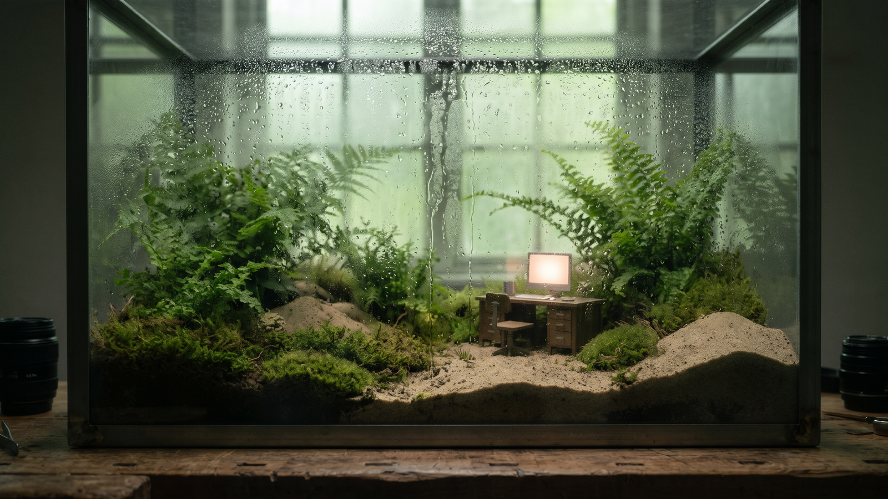

A private world inside the glass
Firejail gives the browser a private home view and the browser profile restrictions of its default sandbox profile. Brave never sees your real home folder; it sees the terrarium. Everything the browser saves, it saves inside that contained world, which is the point of planting it there.
No glass, no browser
The script checks two things before it runs anything, and the order is deliberate: firejail first, brave second. If the sandbox is missing, launching the browser anyway would be the one outcome this repository exists to prevent, so the script stops and says exactly that:
error: firejail is not installed, so Brave would run unsandboxed. Install firejail first. error: brave is not installed (or not on PATH).
Both refusals go to standard error and the script exits with status 1. It never falls back to running Brave bare. A terrarium with no glass is not a terrarium with the lid off; it is not a terrarium at all.
One command, and your words pass through
./sandbox.sh ./sandbox.sh https://example.com
Any arguments you give are passed straight through to the browser, because the final line runs exec firejail brave "$@": the quoted "$@" carries your URLs and flags across exactly as typed, and exec replaces the shell itself with the sandboxed browser. There is no wrapper process left behind, so Ctrl+C and the exit code you get back belong to the browser run, not to the script. Lookups are done with command -v, and set -u is on, so an unset variable stops the script rather than slipping through.
Condensation on the inside

That is the honest picture of a sandbox. The browser inside can be as lively as it likes. The machine outside feels none of it.